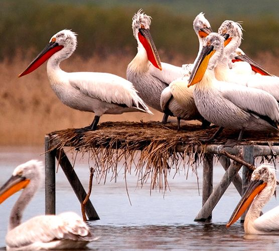

Balıkesir ili, Türkiye Cumhuriyeti'nin Marmara Bölgesi'nin Güney Marmara Bölümü'nde, topraklarının bir kısmı ise Ege Bölgesi'nde yer alan, hem Marmara hem de Ege Denizi'ne kıyısı bulunan bir ildir. Türkiye genelinde ise iki deniz ile komşu olan sadece 6 il vardır. İl, Kuzeybatı Anadolu'da bulunmaktadır. Doğusunda Bursa ve Kütahya illeri, güneyinde Manisa ve İzmir illeri ve batısında Çanakkale ili vardır. Ayvalık ilçesinden de Yunanistan'ın Midilli Adası'na komşudur. Merkez ilçesi dahil 19 ilçeden oluşmaktadır. Yüzölçümü bakımından en büyük 12. il, 2012 nüfus sayımına göre de 1.160.731 kişiyle Türkiye'nin en kalabalık 17. ilidir.
Balıkesir Tarihçesi
Balıkesir ili genelindeki pek çok höyük, mağara ve düz yerleşim yerlerinde yapılan araştırmalarda bu topraklara M.Ö. 8000-3000 yılları arası yerleşildiği ortaya çıkmıştır. Havran’a 8 km. mesafedeki İnboğazı mağaralarında Paleolitik, Neolitik ve Kalkolitik devirlerinden kalma kalıntılar bulunmuştur. Babaköy (Başpınar) kazılarında, Yortan mezarlığında, Ayvalık Dikili yolu üzerindeki Kaymak Tepe’de Bakır Çağı’na ait kalıntılar ve yerleşim yerleri bulunmuştur. Bu bölgede ilk defa adı geçen şehir Agiros (Achiraus)’dur. Anadolu Selçuklu Devleti’nin yıkılmasından sonra bölgede Karesi Beyliği kurulmuş, ardından bölge Osmanlı Devleti’nin eline geçmiştir.
Balıkesir’de Osmanlı Hakimiyeti
Karesi Beyliği’nin tarih sahnesinden çekilişi ve yerini henüz devlet olma aşamasında bulunan Osmanlı Beyliği’ne bırakışı, ileride güçlü bir devlet hâline gelecek olan Osmanlılar için askeri ve siyasi genişleme açısından önemli bir adım olmuştur. Karesi, Osmanlı’ya ilhak olduktan sonra müstakil bir sancak yapılıp yönetimi Süleyman Gazi’ye verilmiştir. Yıldırım Bayezid, Saruhanoğulları Beyliği’ni 1390′da ele geçirdikten sonra Saruhan ve Karesi’yi birleştirerek oğlu Ertuğrul’a vermiş, daha sonra buranın yönetimine Bayezid’in oğullarından bir diğeri olan İsa Bey getirilmiştir. Bir süre sonra Saruhan ve Karesi tekrar ayrılmıştır. 1393 yılında Karesi Sancağı, aynı yıl kurulan Anadolu Eyaleti’ne bağlanmıştır. 1402 tarihli Ankara Muharebesi’nde Karesi kuvvetleri, Osmanlı büyük ordusunun sağ kolunda bulunmuştur. Yenilginin ardından Balıkesir ilinin bulunduğu bölge Timur ordusunun saldırılarına maruz kalmıştır. Timur’un kendilerine bağımsızlık verdiği öteki beylikler gibi Karesi Beyliği, yeniden bir canlanma dönemi yaşamamıştır. Anadolu’nun genelinde yaşanan kıtlık, 1494 ile 1503 yılları arası Balıkesir ili genelinde de yaşanmıştır.
Cumhuriyet Döneminde Balıkesir
1923 yılında bütün sancakların il olmasıyla Karesi ili kurulmuştur. 1926 yılında ilin adı Balıkesir olmuştur. 15 Kasım 1942 tarihinde Balıkesir ilinde 7 şiddetinde deprem olmuştur. Bu depremin sonucunda büyük can ve mal kaybı yaşanmıştır. 1980 İhtilali sonucu 12 Eylül 1980 günü sabah saatlerinde ilde sıkı yönetim başlamış, 19 Temmuz 1984 günü saat 17.00′de sona ermiştir. 17 Ağustos 1999 depreminden sonra dönemin Kandilli Rasathanesi Müdürü Prof. Dr. Ahmet Mete Işıkara, 19 Ağustos günü Marmara’da yeni bir depremin olabileceğini söylemesi üzerine aynı gün Balıkesir valisinin talimatı ile Balıkesir ilinde evler boşaltılmıştır.
Balıkesir İlçeleri
Balıkesir'in 19 adet ilçesi vardır. Bunlar:
Ayvalık, Balya, Bandırma, Bigadiç, Burhaniye, Dursunbey, Edremit, Erdek, Gömeç, Gönen, Havran, İvrindi, Kepsut, Manyas, Marmara Adası, Savaştepe, Sındırgı, Susurluk
BALIKESİR GEZİLECEK YERLER
CUNDA ADASI
Yazları Ayvalık’tan Alibey Adası’na her saat motor seferleri de yapılmaktadır. Adanın yüksek kesimlerinden boğazların, adaların, iç içe girmiş koylarının güzellikleri seyre değer. Neoklasik hayranları sessizlik ve doğa ile birlikte olmak isteyenler için en uygun yerdir.Ada merkezinde sıralanmış balıkçı lokantalarında, meşhur Papalina, deniz mahsulleri, mezeleri ve zeytinyağlı ot yemekleri ile akşam yemeklerinin zevki hiç bir yerde bulunmaz.
AVŞA ADASI
Avşa Adası (Türkeli Adası), yapı ve yer şekilleri bakımından Kapıdağ Yarımadası’nın Marmara Denizi’ndeki uzantısı görünümünde olan Marmara Adaları’ndan biri. Marmara Denizi’nin güneybatısında, Balıkesir‘e bağlı Marmara Adası ve Paşalimanı Adası ile birlikte 3 büyük adadan biri olan Avşa, üzümleri ve şarabıyla ünlü küçük ve şirin bir tatil beldesi. İstanbul’a yakınlığı sayesinde her yıl binlerce tatilciyi ağırlayan Avşa, büyük kentlerden düzenlenen vapur seferleriyle de kısa süreli tatiller için ideal. Tertemiz denizi ve güzel sahillerinin yanı sıra, pek çok su sporu aktivitesine imkân sağlayan Avşa, coğrafi yapısıyla da bisiklet turları ve doğa yürüyüşlerine de oldukça uygun. Tatilcilere doğa ve su sporları, avcılık, sosyal aktiviteler gibi pek çok alternatif sunan Avşa’nın turistik tesisleri, ziyaretçiler için farklı konaklama seçenekleri sunuyor.
KAZDAĞI MİLLİ PARKI
Kazdağı tarih öncesi yıllarda da çeşitli medeniyetleri barındırmış muhtelif tarihlerde kentler, kasabalar kurulmuş ve yıkılmıştır. Bilinen tarihi MÖ 2000 yıllarında başlar. Bu tarihlerde Thebe şehri, Lyrnessos şehri, Khrysa şehri, Killa Şehri, Anderia şehri, Antandros şehri, Adramytteion şehri, Astrya şehri, Gargara şehri gibi şehirler kurulmuş bunlardan bir çoğuda Truva savaşları sırasında yok edilmişlerdir. Homeros İlyada’sında İda Dağı (Kazdağı) için "Bol pınarlı vahşi hayvanlar anası" diye bahsetmektedir. Kazdağı’nın her yerinden kaynaklar çıkmaktadır. 1500 m. rakımda dahi yaz kış suyu olan kaynaklar mevcuttur. Edremit, Akçay ve Altınoluk’ un buz gibi soğuk ve bol içme ve kullanma suyu Kazdağı’nın eriyen kar sularıdır. Kazdağları’ndan gelen orman havası ile denizin iyotlu ve oksijen miktarı yüksek havası birleşince Altınoluk Şahin Deresi Boğazı civarı oksijen çadırı şeklinde ifade edilmektedir.

MANYAS KUŞ CENNETİ
Kış mevsiminin sonlarına doğru Kuş Gölü'nün suları yükselmeye başlar ve kuzeybatı kıyısındaki, küçük söğüt korusunu ve etrafındaki sazlıkları kaplar. Kışın bahara döndüğü günlerde soğuk devreleri güney ülkelerinde geçiren göçmen kuşlar yuva kuracak yer olarak sessizlik içindeki Kuşcenneti Milli Park'ını seçerler. Yuvalarında yumurtlar, kuluçkaya yatarlar. Yavrular gözlerini burada açarlar, beslenir, büyür, serpilir ve gelecek yıl yine gelmek üzere uzaklara uçarlar. Göl suları, söğüt korusu ve sazlıkların sağladığı beslenme, güvenlik ve barınma olanakları ile elverişli iklim şartları, Avrupa-Asya kıtaları arasında büyük kuş göçlerini bu küçük (64 Ha) yurt köşesine yönelterek, yörenin memleketler arası ün kazanmasına neden olmaktadır. Kaşıkçıdan balıkçılara, çeltikçiden, karabataklara, saz bülbülünden pelikanlara, kuğudan kazlara, ördeklere kadar kuluçka yapan, kışlayan ve göç sırasında uğrayan 239 kuş türünden 2-3 milyon kuş her yıl buraya uğramaktadır.
ŞEYTAN SOFRASI
Şeytan Sofrası, Ayvalık ilçe merkezinin 8 km güneyinde bulunan hakim büyük kayalık tepelerin üzerindedir. Mevkiden tüm Ayvalık Adaları ve Midilli Adası’nın manzarası gözükmektedir. Üzerinde Şeytan’ın ayak izi bulunduğuna inanılan, halkın madeni para atarak dilek dilediği eski bir lav birikintisidir. Sönmüş bir volkandan arda kalan lav birikintileriyle oluşmuş tepe, yuvarlak sofra biçimini andırır. Demir kafes içine alınan ayak izine benzeyen şekil turistlerin özellikle uğradığı yerlerden biridir.Ayrıca gün batımını seyretmek içinde gidilir.
ANTANDROS ANTİK KENTİ
M.Ö. 10.yy’da kurulduğu düşünülmekle birlikte, çok yakınında bulunan Assos’un M.Ö. 2 bin yıllarına kadar inen tarihinden Antandros’un da bu tarihlerde iskan görmüş olması mümkün görülmektedir. Antik yazar Strabon, Leleg kavminin Bababurnu’ndan (Lekton) İda Dağı'na kadar olan bölgede yerleştiklerini belirtmektedir. Önce Thrakialı Mysialılar’ın yerleştiği bilinen bölge, M.Ö. 7. yy’da Limni üzerinden gelen Aioller tarafından iskan edilmiştir. Pelasgların da bu tarihlerde Antandros’a yerleştikleri antik kaynaklardan anlaşılmaktadır. Antandros’un bir Pelasg kenti olduğunu, tarihteki Batı Anadolu İsyanı’ndan (M.Ö. 499-494) sonra Pers Kralı Dareios’un komutanı Otoneis’in Antandros’u zapt ettiğini ve Kserkeses ordusunun Yunan seferine giderken kentin yanından geçtiğini Heredot’ tan öğrenmekteyiz. Anadolu’ da araştırmalar yapan Henri Kiepert kitabında Antandros’ un akropolünün Altınoluk – Avcılar arasında Yarmataş olarak bilinen 215 m. rakımlı tepede bulunduğunu ve kentin doğuya doğru yayıldığını ifade etmektedir. Kentin nekrolpolü ise Yarmataş Tepesi’nin 2 km. daha batısında yer almaktadır. Nekropol alanı inşai faaliyetler sırasında ortaya çıkmış ve 1989-1996 yılları arasında kurtarma kazıları yapılmıştır.